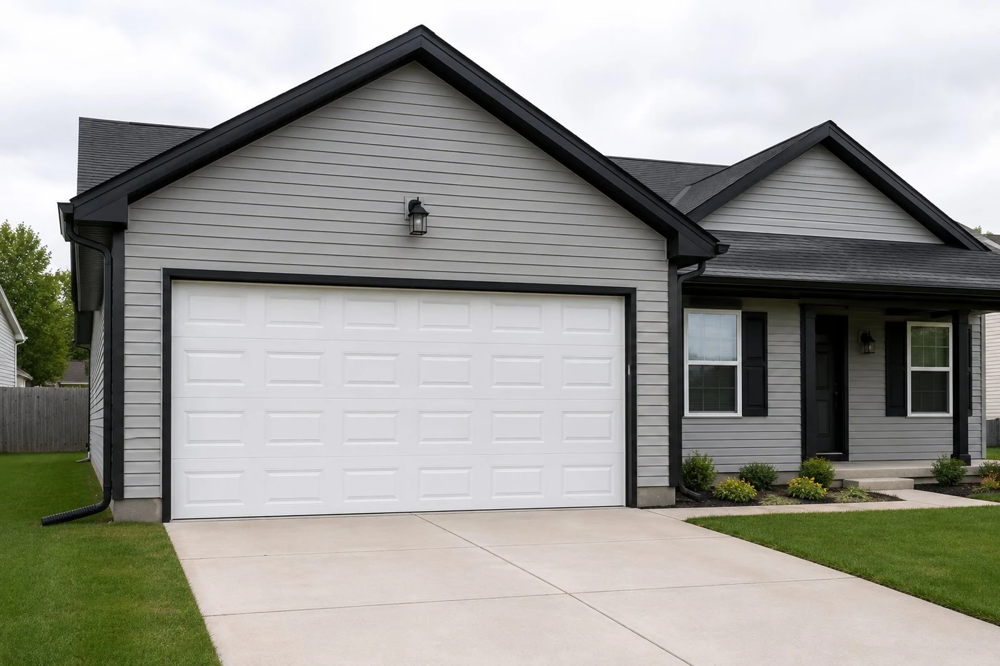

When to replace instead of repair
Most garage door problems are worth repairing — springs, cables, openers, and off-track rollers are all fixable and relatively inexpensive. But there are situations where replacement makes more sense: multiple cracked or bent panels, a door that's warped or rotten, severe collision damage, or a door that's simply too old and inefficient to justify continued repair investment.
A good rule of thumb: if the repair cost exceeds half the price of a new door, and the door has other issues that are likely to surface soon, replacement is the better long-term call. We'll tell you honestly which situation you're in — we don't replace doors that just need a spring.
Curious what a new door runs? See our replacement cost guide. Not sure which brand to choose? Our garage door brand comparison covers the major manufacturers we install. And if it's just one damaged section, panel replacement is often the more cost-effective fix.

Door options for Columbus homes
Steel raised-panel doors
The most common choice for Columbus homes — durable, low-maintenance, available in a range of colors, and cost-effective. Standard steel doors range from single-layer (basic) to double and triple-layer insulated models. For homes in Columbus with attached garages below living spaces, insulated doors make a real difference in temperature control and noise.
Carriage-style doors
Steel doors with a carriage house aesthetic — decorative hardware, crossbuck design, arched windows. Popular in Dublin, Upper Arlington, and other higher-end Columbus suburbs where curb appeal matters. Same durability as standard steel, just with a different look.
Modern flush panel
Clean, contemporary doors with flat or ribbed panels, often in darker colors — charcoal, dark bronze. Common in newer construction in Lewis Center and New Albany. Works well with brick and board-and-batten exteriors.
"We replaced a door in Dublin last summer on a home that had taken a vehicle hit — the bottom two panels were crushed and the track on the impact side was bent beyond straightening. The homeowner had been told panel replacement would be close to the price of a new door, which was true in this case. We installed a carriage-style insulated door with arched windows that matched the home's exterior far better than the original. Those are the replacement calls that make sense."
Common replacement questions
How much does door replacement cost?
A standard steel replacement door installed in Columbus runs $800–$1,800 depending on door size, insulation level, and style. Carriage-style and custom doors run higher. Written quote before work starts.
How long does installation take?
A full door replacement — removing the old door and hardware, installing the new door and associated hardware — typically takes 3–5 hours for a standard double-car door.
Do I need a new opener too?
Not necessarily. If your existing opener is in good working order and compatible with the new door's weight and size, we can reuse it. We'll check compatibility when we quote.
What brands do you install?
We install Clopay, Amarr, and Wayne Dalton doors — all widely available, well-supported, and appropriate for Ohio's climate and temperature swings.